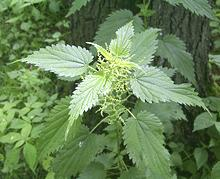

The Stinging Nettle is the most common culinary member of the Urticaceae family, though others are also eaten locally. This highly nutritious plant was important to the Native population of North America, but it has fallen out of use here except as an ingredient in some herbal teas and hair treatment formulas.
Nettles are still eaten frequently in Ireland, where they were one of the major reasons the English were not able to starve all the Irish to death during the potato famine. They contain more usable protein than just about any other leafy green, in general by a wide margin. Nettles are also eaten in parts of Northern and Eastern Europe, as well as in Italy - and in Nepal and the neighboring Kumaon division of India. They also have medicinal uses, particularly in treatment of arthritis.
More on Order Rosales.
 The European stinging nettle has longer narrower leaves (photo left), but is used in the same ways as the American variety (photo top). Photo distributed under license Creative Commons Attribution-Share Alike 3.0.
Do wear gloves when gathering nettles, as the "stinging" part of the name is not there without reason. Incidentally, you are more likely to be stung by lightly brushing against the plant than by handling it firmly.
Nutritious nettles were probably significant in the English failing to starve all the Irish to death. Yes, it was a deliberate policy. During the famine there was enough food in Ireland, but most of it was under armed guard for export to England. The English did their best to prevent other countries from supplying the Irish with food, or with money to buy food.
Nettles have been used medicinally for thousands of years for many ailments, including prostate swelling, arthritis, anemia, hay fever, kidney stones, urinary infections, gout, pain and others problems. It's effectiveness has been confirmed by medical testing in some cases.
While some large nettles in Australia (everything is more toxic in Australia) have stung animals and at least one human to death, our culinary nettles are not dangerous. If they sting you the sting goes away in 10 minutes or so.
od_nettlz 100413 - www.clovegarden.com